生成时间：2026-11-08T11:47:54+08:00
今日保留论文数：9
内容构成：今日新文 9 篇；补充推荐 0 篇；经典旧文精读 0 篇
阅读分层：重点精读 2 篇；相关简报 7 篇。精读依据科学贡献筛选，简报保留方法、结论及局限。
数据源警告
- 本次有 2 个数据源访问异常；完整错误已保留在运行日志中，日报只显示摘要。
- 其他来源：2 个异常。
- 主要错误类型：其他 2 次。
高能天体物理重点
1. Systematic Study of Cosmic Rays in Star-Forming and Starburst Galaxies using Fermi-LAT and Multiwavelength Data
- 来源：arXiv / astro-ph.HE
- 链接：https://arxiv.org/abs/2611.07189
- 作者：Hinako Ochi, Tsunefumi Mizuno, Yasushi Fukazawa, Noemi Barnier, Susumu Inoue, Wataru Iwakiri, Junling Chen, Tomonori Totani
- 公告 / 来源日期：2026-11-06
- 阅读层级：重点精读
- 评分：novelty 8/10，importance 8/10，relevance 10/10，final 9.70/10
- 推荐理由：15年Fermi低能谱结合TeV和射电重估M82、NGC253的宇宙线电子比和量热效率；模型退化与背景核读有高价值。
中文题目：把星暴星系当作宇宙线量热器：Fermi 低能谱如何修正电子比例与能量预算
做了什么：星暴星系的气体密度高，超新星加速的质子可能在逃离前通过质子碰撞把能量转为介子和伽马射线。困难是几百 MeV 以下的 LAT 角分辨率较差，而电子轫致辐射也能填充这一段光谱。作者统一分析 2008 年 8 月至 2023 年 8 月的 Fermi-LAT 数据，从已单独探测的成星与星暴星系中选七个对象，用点源和弥散背景似然重建光谱。M82 与 NGC 253 的谱在数百 MeV 以下向低能一侧下弯；拟合全能区用有曲率的模型后，低能数据点比用无曲率幂律取得的结果低。
作者再把 GeV 谱与文献中的核区射电和 TeV 数据放进同一区域辐射模型，发现两颗星暴星系的电子／质子数谱之比可与银河系同量级，质子能量密度分别约 190 和 470 eV cm⁻³，均低于所采用的磁场能量密度。这个比值依赖磁场、气体、辐射场与单区几何，不能由伽马谱单独读出。M31 的中央与东南分量则须分开，中央均匀盘半径的 95% 上限 0.33° 约束形态，并未鉴别具体未解析源。
为什么重要：这项工作把两类常被混在一起的差异分开：同一套光子在不同谱模板下的流量重建偏差，以及星系是否真的更有效地耗散质子能量。采用一致的低能事件与背景处理后，Arp 220 和 NGC 2146 的伽马光度比以往低约一半，样本中的星暴星系更容易与量热上限相容，普通成星星系则仍远低于上限。比较得到的是经选择的少数已检出星系，不是所有星系量热效率的无偏分布。
理论 / 观测 / 仪器方法价值：对观测，最可复用的是在一致事件选择下并列算计数图、宽能区似然和分能段谱点，把模板变化当作可见的系统误差。对辐射模型，可把射电谱约束的电子同步辐射、气体密度决定的轫致辐射及质子介子衰变、光子场决定的逆康普顿一并校验。传播部分再用损失和逃逸时间的竞争区分不同星系，避免用一条经验亮度关系反推出唯一扩散系数。
为什么应该关注：对于 IACT/LACT 与地面 TeV 观测，M82、NGC 253 是跨能段质子谱和 TeV 成星星系模型的直接参照。将 LAT 低能光子混淆与 TeV 仪器的点扩散函数和响应分别处理，能检查幂律外推是否与分段数据相容。若关注与中微子背景的联系，本文只改进了强子产额与环境的输入；要预测中微子仍需母粒子谱高能延伸、总体族群与红移演化，不能直接从样本光度比推出全宇宙通量。
展开详细解读：文章讲解、背景、理论、重点章节、图表与相关工作
文章详细讲解
科学问题是从星系整体的非热谱读出宇宙线产生和逃逸。恒星形成率高往往伴随高气体柱和高超新星率，但源区密度、磁场和风并不会按同一比例改变。伽马亮度可能大是因为注入多，也可能是单个质子更易损失能量；少量高能电子还会在低能谱段造成看似强子转折的变化。
方法分成观测与解释两层。第一层用 Fermitools/Fermipy 对实际 LAT 计数建立源、邻源和弥散背景模型，比较幂律与对数抛物线；分箱显著性弱时给上限。第二层才用 Naima 在给定环境下计算各粒子辐射分量，以射电数据约束电子，以 GeV 至 TeV 谱检查质子谱和总强度。两个阶段的参数不能互换：对数抛物线的曲率是观测描述，不是直接的质子输运系数。
结果首先是低能谱确实存在对模板的敏感性。M82、NGC 253 都偏好采用温和的对数曲率；拟合两颗星暴星系的电子和质子得到较低电子贡献。其次，普通星系的气体盘和晕区输运可以让相当部分质子在碰撞前逃逸，解释较低的光度比。对 M31，三 GeV 以上更清楚分出两个分量，低能端则不能以同样空间解析度分离未解析源和星际介质辐射。
下一步应对气体图、星暴核大小、磁场和 TeV 计数响应做联合系统误差传播。强磁场使同样的射电可由较少电子产生，弱磁场则会要求更高电子归一，可能过量产生低能伽马。作者演示将 M82 的场减半会破坏所测试模型的拟合，这个反例只约束该环境和辐射组合，并不能把磁场当作由数据无条件测准。
关键结果是怎么做出来的
七个对象来自 4FGL-DR3 的已探测样本并受亮度筛选；弱源被排除意味着量热结果只能先比较分析范围内的对象。十五年时间覆盖提高统计量，但数据处理最关键的是低能宽点扩散函数下的邻源、背景和质量选择，不能以积累曝光替代空间分解。
在 M82，幂律光子指数约 2.145，对数抛物线的曲率约 0.110；NGC 253 的对应曲率约 0.130。图 2 和图 4 的比较显示，整谱选用错误形状会改变分箱流量，尤其低能端。图中数据点和拟合线共享模型假设，并不是完全独立的数据对模型检验。
图 11、12 将放大的低能差异传递到辐射模型。电子同步辐射必须解释核区射电，轫致和逆康普顿又不能超过低能伽马点；质子介子分量承接 GeV–TeV。核区尺度和背景光场来自文献；因此观测减小的是允许电子分量的范围，不能从这组图解出独立的粒子总量与气体质量。
M31 的两个峰在大于 3 GeV 的残余 TS 图上分得更清楚。作者在删去原 4FGL M31 模板后分别拟合中心与东南源，TS 约 75 与 44，并用大于 800 MeV 的均匀盘扫描给中央半径上限。这是特定替代模板下的结果；软中央谱和紧致性只支持未解析源可能显著，不足以宣布已探测到毫秒脉冲星族群。
图 14 把七目标与银河系及麦哲伦云放在伽马—红外关系中比较。星暴光度比约 0.33–1.20，普通成星星系约一成；这里观测比值超过 1 的点不是物理上转化超过 100%，而提醒量热标定、注入功率及光度误差。附录 B 的 NGC 2146 算例在数 GeV 有高耗散效率，可与观测比值量级比较，但不能把两者视为同一能段精确等式。
展开背景、理论、公式、模型和章节导读
背景知识
宇宙线是非热带电粒子。超新星遗迹等源将一部分机械能投入质子和电子，之后粒子既可扩散也可随星系风离开；能从星系外看见的是它们与气体、磁场或光子场作用后释放的辐射。
质子在气体中碰撞产生中性介子，介子衰变给出伽马射线；带电介子链又联系中微子和次级电子。阈值附近的运动学和粒子谱使几百 MeV 能段有辨别力。电子轫致辐射和逆康普顿却会重叠，因此并非看见曲率就证明辐射全部来自质子。
星暴核相较于银河系薄盘更紧凑而致密，容易让碰撞发生在逃逸前。“量热器”指粒子在离开前消耗大部分可耗散能量，观测上则常用光度与假定的最大伽马产额比作估计；注入率和环境模型的误差不能混入严格概率定义。
低能 LAT 事件角度误差更大、每个目标的视场由邻源和弥散结构共同贡献。能源间比较首先需要不同能段的响应、空间模板和光子选择一致可追溯。再利用射电和地面 TeV 数据提供独立于低能伽马的额外方向，而不是把更多点简单当作同一模型已被证明。
基础理论 / 方法脉络
光子计数需要曝光和背景才能换成光谱。点扩散函数会把真实天区像素混合，因此源模板的归一和邻源密度相关；低能空间信息较弱时，这个相关更强，宜保留背景模板和同口径对照。
幂律要求每个对数能段斜率相同；对数抛物线允许斜率平滑变化。作者先做这些经验谱的比较，再用粒子发射物理解释，避免把经验曲率误解释成单一物理通道。
能损机制的能量依赖不同。电离在低能更有相对影响，轫致近似随能量线性，处于 Thomson 极限的同步和逆康普顿损失接近二次。由此相同的电子注入谱在稳态可以形成不同斜率；离开 Thomson 极限或有显著逃逸时，不能照搬简单的谱折公式。
星系输运还需要决定宇宙线能在气体层停留多久。若尺度高超过气体层，平均目标密度会降低；若碰撞能量损失在达到晕边界前就变强，则穿越长度要自洽求取。附录用银河系的一 GeV 典型克重校准扩散修正再外推，各星系共享同一因子是重要建模限制。
公式与推导
先定义作者的经验光子谱（原文式 1–2）。$K$ 是参考点单位能量、单位面积和单位时间的光子流量，$\Gamma,\alpha,\beta$ 无量纲。保持相同归一约定比较曲率，而不是直接比较参考能量不同的 $K$。
每个能段以有源和无源的最大似然构造原文的检验统计量；$L_1,L_0$ 包括相同的背景与曝光。论文在 TS 低于 4 的能段报告 95% 上限，TS 本身无量纲，不能从曲率误差另加一份发现显著性。
教学连接：谱图常画 $E^2\phi$，因为它是每单位自然对数能段的能流。距离 $d$ 下的各向同性等效伽马光度由积分获得，能量须换成统一单位。它用于图 14 的观测坐标，不等于粒子功率。
电子能量损失在作者模型中按不同机制近似相加；$b=-dE_e/dt$ 的单位是能量每时间，因此三个 $C_i$ 的量纲不同。若忽略逃逸且注入与损失稳定，下面的连续方程可作为理解冷却形状的教学近似。
在给定能量用 $K_{\rm ep}$ 比较电子与质子的微分数谱；它随能量变化，也不同于总能量密度之比。$V$ 是所假定核区体积、$B$ 用高斯，式子说明为何缩小核区或改磁场会改变能量预算。
附录 B 把扩散与平流率相加，二者单位都是时间的倒数；$t_{pp}$ 是质子碰撞能量损失时标。定义损失所限高度时比较两类时标，几何晕边界先到时就按逃逸算。
在传播先受晕边界截断的情形，作者使用左式的有限停留概率；损失限制高度时用右式延伸到量热极限。两式在边界相接，时间比和高度比都无量纲。须将这个能量依赖理论效率和图 14 由总光度比得到的观测估计分别阅读。
模型拟合 / 应用方法
观测拟合使用已知 LAT 源和弥散模板。先从整段能区比较有无曲率，再在分能段给流量与 TS。低能点同时依赖能谱形状和背景强度，故图 2 的两列不是对同一组完全固定谱点做事后拟合。
Naima 部分以单区核为假设，使用文献固定气体、磁场和光子场，比较质子介子衰变与电子各分量。NGC 253 采用约 150 pc 核半径及约 210 微高斯磁场，射电取核成分，与 LAT 分辨不出核大小是两层不同约束。不同分量若共用同一带宽的点，独立性不能由图上颜色判断。
M31 的形态检验先减去既有 M31 源模型，观察残余 TS 地图；再固定候选位置做两源拟合。用更高能样本扫描中心均匀圆盘半径，得到半径上限。这个扫描不等于在全部空间模型中选择了唯一真实模板。
解释层的稳健性来自有物理作用的环境变化测试，例如弱磁场会提高为匹配射电所需的电子数。论文没有以完全独立的环境观测边缘化所有辐射参数，也未用全样本同一种多区模型。复用时应让环境量随外部测量不确定度变化，并在相同背景与响应下检验低能残差。
重点章节 / 结果段落怎么读
- 第 2 节：先核样本怎样从已检出源选出，弄清低能选择、空间模型与 TS 上限。
- 第 3.1–3.2 节：比较图 2/4 的两种谱模板，理解为何更换模型会改数据点。
- 第 3.3 节：从残余 TS 图到中心扩展上限，分清空间与光谱证据。
- 第 4.1 节：读核区环境参数及多波段分量，区分实测与固定输入。
- 第 4.3 节和附录 B：把光度比与传播时间、能量相关效率放在一起比较。
关键图表与解读
图2
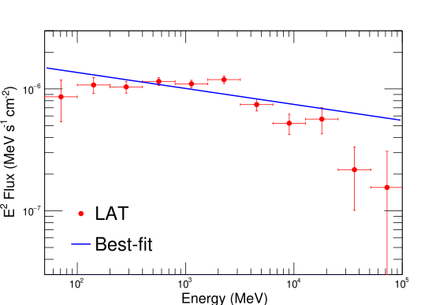
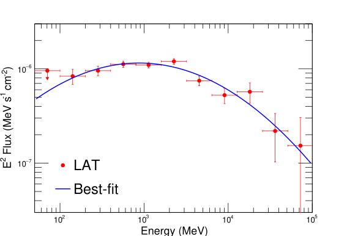
图注：M82 的谱能量分布与最佳经验谱。左图采用幂律，右图采用对数抛物线；整段谱形的选择会影响分箱谱点，后续讨论采用右图结果。
怎么看这张图：看低能端谱点相对最佳曲线的变化；两面板由同一批光子重建，不能当成两份独立数据。 直接支持本篇核心结果和方法边界
来源与置信度：arXiv HTML；source verified；https://arxiv.org/html/2611.07189v1/Figure2a.svg；https://arxiv.org/html/2611.07189v1/Figure2b.svg
图11
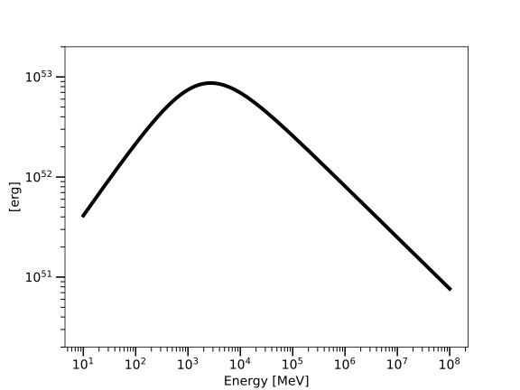
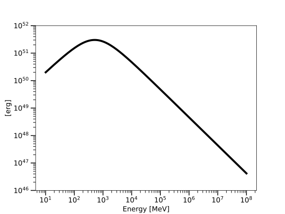
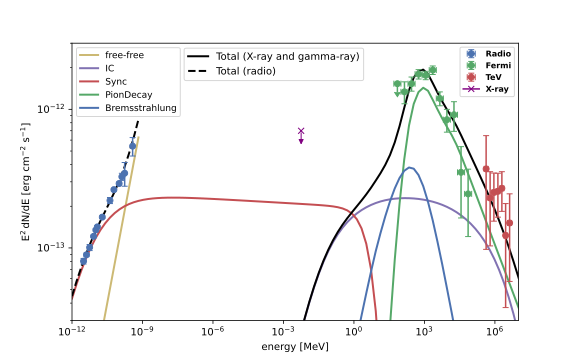
图注：M82 的最佳拟合质子谱（a）、电子谱（b）以及谱能量分布与各拟合辐射分量（c）。
怎么看这张图：横跨射电与 GeV、TeV 观察电子和质子各在哪一段受限制。彩色分量是给定环境下的模型分解，不是分别测得的光子流。 直接支持本篇核心结果和方法边界
来源与置信度：arXiv HTML；source verified；https://arxiv.org/html/2611.07189v1/Figure11a.svg；https://arxiv.org/html/2611.07189v1/Figure11b.svg；https://arxiv.org/html/2611.07189v1/Figure11c.svg
图14
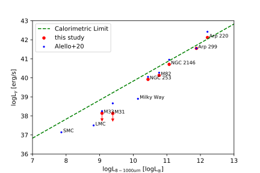
图注：本文目标与小麦哲伦云、大麦哲伦云、银河系的伽马射线光度和红外光度关系。横轴为 8–1000 微米红外光度，纵轴为大于 100 MeV 的伽马光度。
怎么看这张图：比较星暴和普通星系对量热标度的距离；超过参考线的个别光度比反映标度、注入和观测不确定性。 直接支持本篇核心结果和方法边界
来源与置信度：arXiv HTML；source verified；https://arxiv.org/html/2611.07189v1/Figure14.svg
强相关工作
Ajello 等较早的 Fermi 成星星系研究提供整体伽马—红外关系及无曲率基线；本文更长曝光与低能事件选择把 M82、NGC 253 的曲率问题放到数据层检查。Persic 等对 M82 的低能处理说明事件质量选择可改变这一段的谱形，比较时要对齐选取方式。
Xing 等把 M31 分解成中央与东南两分量，本研究用独立能段残余图检验了这一解释；Lacki 与 Thompson 的星暴核环境参数则是多波段解释的外部输入。与 Sudoh、Shimono、Chen 与 Totani 的单区传播框架相比，附录的变化是显式解宇宙线尺度高与气体停留，不能把改良单区模型等同于对真实三维磁结构的直接反演。
同一事件 / 同类源线索：
（未提供）
相似工作：
（未提供）
基础理论 / 方法工作：
（未提供）
相反观点 / 张力线索：
（未提供）
2. DIS-secting the universe with high-energy neutrinos
- 来源：arXiv / astro-ph.HE
- 链接：https://arxiv.org/abs/2611.08221
- 作者：Rhorry Gauld, Lorenzo Guerra, Ulrich Haisch, Alessio Vorona
- 公告 / 来源日期：2026-11-06
- 阅读层级：重点精读
- 评分：novelty 8/10，importance 8/10，relevance 10/10，final 9.70/10
- 推荐理由：中微子CC深度非弹散射全NLO电弱加QED重求和，量化能量映射及非生成器成分超过10%，对望远镜响应直接重要。
中文题目：从中微子能量到可见 μ 子：电弱辐射如何改变深度非弹散射的能量映射
做了什么：高能缪中微子通过带电流深度非弹散射产生缪子和强子系统，缪子径迹的亮度与能量常用于推断母中微子。若缪子在产生时向近共线方向辐射光子，实际进入径迹的缪子能量会变小；只对总截面加入高阶强相互作用修正并不能恢复这个能量映射。作者构造了全微分的固定阶蒙特卡洛，结合次领阶 QCD 和电弱修正、轻子末态光子辐射的碎裂函数，并分别加入光子初态和相干/衍射过程。
他们把固定阶结果与 POWHEG-BOX 联合 Pythia 8.3 的不同簇射选项比较。选用偶极簇射后，在约 10 TeV 以内可抓住主要修正；更高能量时光子诱发及相干 W 产生影响不可略去，能量和非弹性分布的修正可超过一成。论文提供网格供再分析使用；在等标量靶和给定大气谱上得出的均值变化是相互作用层预测，尚未经过真实望远镜选择与重建。
为什么重要：望远镜真正拟合的往往是 μ 子能量、级联能量与天顶角的联合分布。即使总事件率改动不大，能量从 μ 子转移到近共线光子仍会让事件跨越重建阈值、移动到不同非弹性区间。对精确能谱和味组成而言，模型误差不能只靠一个总截面归一吸收。本文给出了该效应的大小、常用模拟器可用的能区和缺失成分，能直接检验系统误差预算。
理论 / 观测 / 仪器方法价值：方法上应把有无末态辐射的粒子定义、PDF 尺度、强相互作用簇射和新增光子过程分开核对。作者用裸轻子描述观测能量，用角度重组构造稳定的参考尺度，避免把两种定义混为一谈。公开二维网格能用于事件重加权，但在需要光子角度、簇射细节或新末态时，权重不能代替新增事件生成。
为什么应该关注：高能中微子源分析中，母能量依赖径迹代理量及通量谱先验，若相互作用模型把 μ 子能量平均给得太高，可能改变从观测分布反演出的通量和截止。适合先用同一通量和核靶跑含/不含修正的响应，再把差异送入望远镜的能量与拓扑迁移矩阵。论文没有拟合某个真实天体源，也没有重估现有 IceCube 显著性。
展开详细解读：文章讲解、背景、理论、重点章节、图表与相关工作
文章详细讲解
问题是标准模拟对“给定母中微子能量，仪器能看到多少缪子能量”的描述够不够精确。带电流相互作用产生强子簇射和带电轻子，但轻子可辐射光子；光子在水或冰中更像局域级联，留下的缪子却形成远距离轨迹。这是对事件内部能量划分的改变，不能用总截面的统一比例涵盖。
作者先在核子层计算强相互作用部分，再加入有质量的电弱虚实修正和光子初态。虚修正与实辐射需在相同定义下结合；末态近共线区有以轻子质量作调节的对数。为评估更高阶项，他们在已算的一阶项之上加入碎裂函数中未重复的二阶增强项，另外处理相干、衍射等非普通夸克散射贡献。
证据沿三个层次推进：固定阶方案间先比截面和微分非弹性，生成器再与同基线对照，最后把分能量的微分结果按真实形状的大气通量加权。偶极簇射能较好抓住末态光子主要效应，但高能区生成器缺光子诱导和相干 W 过程。通量平均结果既依赖作用过程，也依赖中微子与反中微子比例，不能直接把任一个百分数移作仪器级误差。
边界在于所有主要比较都是理论和蒙特卡洛，1 TeV 缪子门槛只是模拟探测选择。真实望远镜还有岩石/冰中传播、能量沉积、可见强子能量、事件分类和地球吸收。后续须在完整响应中比较权重，并对新增过程单独建事件，检查变化是否能被能标和通量谱的误差吸收。
关键结果是怎么做出来的
首先理解基本运动学：在核子静止系，若用末态缪子能量定义非弹性，光子离开缪子就会让同一母能量的事件移到更大的非弹性。因此比较图时先问画的是裸 μ 子、重组 μ 子，还是由强子量反推。
第 4 节用等标量靶比较 NLO QCD 与 NLO QCD+EW，单独关掉光子 PDF 可以识别光子初态。在部分能区总截面的变化有限，微分非弹性却明显移动。相干项对截面在百分数层，但对平均非弹性的影响可到约 6%，因为新增事件在相空间的分布不同。
第 5 节将 POWHEG 的矩量重排与簇射选项逐项改变。Pythia 的偶极簇射接近作者的末态光子基准；约 100 TeV 时单独对硬光子修正的差异可仍在几个百分点，但这不能解释完整结果，因为某些 W 产生通道没有生成。图 14 使用最小缪子相对能量，避免在极端软端夸大比值。
第 6–7 节给可重用的双微分网格并比较差异。高能处要区分缺少重夸克贡献与缺电弱通道这两个来源，不能把图上的全部分离归给缪子辐射。网格适于给定变量和核靶的截面计算，并不是探测器事件库。
图 20 将固定能量结果按给定通量的各成分混合。作者用 MCEq、SIBYLL 2.3c、H3a 估算下行大气通量并含常规和瞬发成分；下行平均排除了地球吸收的额外变化。图中随母能量变化的均值与比值应作为一套可检验的基线，而非 IceCube 数据点。
展开背景、理论、公式、模型和章节导读
背景知识
深度非弹散射时，中微子看到的是核子内部的夸克和胶子。把部分子动量分布与硬散射卷积，才能由基本散射反推每个靶核子的截面。对带电流，末态有带电轻子；中性流末态仍是中微子，直接可见能量和修正不同。
缪中微子望远镜事件常表现为局域强子沉积加长缪子径迹。径迹可以出入探测体积，只能由沿程能损估计能量；这令初始能量的模型先验很重要。相互作用时一颗光子从 μ 子带走能量，与 μ 子后来在冰中随机损失并不是同一步。
QCD 高阶描述强作用部分的额外发射与虚环，电弱高阶还包括光子和弱玻色子过程。它们不是同一个修正系数。近共线光子发射特别重要，是因为实验区分光子和缪子，导致原先在更包容量里抵消的一部分质量对数重新出现。
固定阶计算精确给出指定阶数的微分分布，簇射则通过近似多次辐射生成更完整事件。两者在同阶基线应先对齐，再比较独有物理过程；看到两个模拟曲线不合，未必表示某一簇射的末态近似本身失败。
基础理论 / 方法脉络
入射中微子与出射带电轻子四动量之差定义表观动量转移。无光子时它就是交换 W 的四动量；有光子时，从裸轻子构造的量不再完全等于硬散射转移。这个区别正是可见分布对末态辐射敏感的原因。
把附近光子重组进轻子四动量能让共线极限平滑，适合用来设定相互作用计算尺度。但用于分析缪子径迹时，通常仍需要知道实际留下的缪子能量。计算中并行保留裸与重组定义，才能识别数值稳定性和真正可观测变化。
近共线过程可分解为产生母轻子的硬核和一个表示保留能量比例的核。分裂函数的软端必须以加分布理解，不能把发散项按普通概率密度直接积分。论文把这个基准与带质量的完整一阶结果比较，再以碎裂函数加入剩余增强项。
核效应也要按通道区分。初态光子 PDF 是核子中光子的贡献，相干/衍射则涉及靶的电磁结构，能产生额外轻子及 W 衰变产物。简单把传统 DIS 截面乘一个常数不保留它们不同的能量分配。
公式与推导
原文式 11–14 给出带电流反应和核子静止系的运动学。设入射中微子四动量为 $p_1$、出射轻子为 $p_3$、核子为 $p$，$Q^2$ 用能量平方计，$x_B,y$ 无量纲。
从上式可直接得出辐射迁移（教学式）。若缪子辐射后保留的能量份额是 $z$，同一母事件的重建非弹性向较大方向移动。适用于光子来自该缪子且比较前后裸轻子能量的情形。
计算参考尺度可以改用重组轻子。论文选择在核子静止系最邻近的轻子—光子对夹角低于 5 度时重组；这里的四动量单位一致。对实验可见量仍需明确是否真的把光子沉积计入同一分量。
近共线的一阶近似对应原文式 5–6。$\alpha$ 是精细结构常数，$\mu_h$ 是硬尺度，$m_\ell$ 是轻子质量；方括号加号是加分布，需要连同软极限的减除解释。系数乘无量纲对数，卷积后仍有截面量纲。
基准式 36 把完整固定阶与额外项相加。碎裂项只加固定阶尚未计入的部分，否则同一光子辐射会被算两遍；相干项是另一物理通道，所有项单位一致。
微分谱经选择区间归一后给非弹性均值（教学记号）。固定母能量下，1 TeV 裸 μ 子门槛排除最大的 $y$，不能用无选择的均值比较有门槛结果。
将多个通量成分混合时要用截面乘通量作事件权重（教学写法，连接图 20）。在固定能量下只需要各成分相对权重；若再对能量积分，必须一起考虑选择和响应。
模型拟合 / 应用方法
本文并未拟合天文实测光变或事件目录，验证对象是相互作用模拟。首先按相同部分子分布和能标比较固定阶计算，查看入射种类、核靶组成、能量和末态轻子质量对差异的影响。带区分口径的尺度带是理论变化，不是统计显著性。
随后在相同固定阶 QCD 基线下切换 POWHEG 的重排与簇射选项，先比纯 QCD，再开启光子末态。这样能辨别“生成时动量重排失配”和“簇射不含某些相互作用”两个问题；后者不能靠调一个排序变量修补。
再加入光子 PDF 与相干过程，比较阈值前后非弹性以及是否在高能改变归一和形状。图 14 的比较有相对能量切选；图 20 采用指定大气谱和等标量靶，对真实实验应另行卷积目标物质、传播及分类效率。
实际复用可以先对事件在 $(E_
u,y)$ 上做网格重加权，再查看中微子和反中微子分别的能量偏移，以及重建拟合的残差。若分析要求额外 W 衰变拓扑，原生成器缺失的相空间无法用已有事件重加权凭空产生，应另建通道并检查重复计数。
重点章节 / 结果段落怎么读
- 第 2 节：区分固定阶电弱、轻子碎裂及相干项，检查软端和重复计数。
- 第 3 节：看裸轻子与重组轻子的定义及实验意义。
- 第 4–5 节：从固定阶对照过渡到生成器逐项诊断，保留各图切选。
- 第 6–7 节：核可用网格变量与适用范围。
- 第 8 节：核图 20 的通量、核靶与理论误差，不当探测器数据。
关键图表与解读
图14
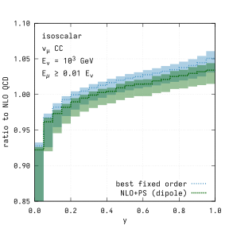
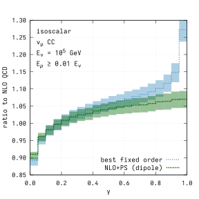
图注：对两个入射能量的 μ 子中微子带电流散射，在末态缪子能量不低于母能量 1% 的选择下，比较最佳固定阶电弱预测（蓝色）与匹配偶极簇射的 NLO QCD 预测（绿色）。均除以对应 NLO QCD 固定阶结果，阴影为各自尺度变化。
怎么看这张图：不要把高能比值差全部归为末态光子；缺少光子诱发及相干 W 产生也改变形状。 直接支持本篇核心结果和方法边界
来源与置信度：arXiv HTML；source verified；https://arxiv.org/html/2611.08221v1/DIS_CC_isoscalar_nu14_1E3_NLO_nolux_ylep_FIG14.svg；https://arxiv.org/html/2611.08221v1/DIS_CC_isoscalar_nu14_1E5_NLO_nolux_ylep_FIG14.svg
图20
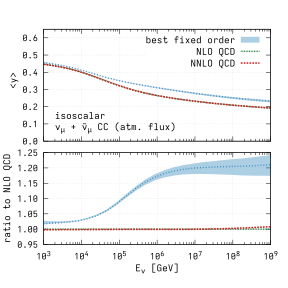
图注：等标量靶的通量平均非弹性。上图为平均非弹性随中微子能量变化，下图为与固定阶 NLO QCD 的比值；蓝色是式 36 的最佳预测及尺度不确定度，绿点线与红虚线是 NLO 与 NNLO QCD。
怎么看这张图：这里用下行大气通量成分加权，纵轴变化是相互作用模型差异，不是重新拟合得到的 IceCube 观测残差。 直接支持本篇核心结果和方法边界
来源与置信度：arXiv HTML；source verified；https://arxiv.org/html/2611.08221v1/DIS_meany_isoscalar_nuatm14.svg
强相关工作
作者用已经公开的 POWHEG-BOX DIS 实现和 Pythia 8.3 建立可复核的生成器基线，与先前只讨论领先对数末态光子辐射的研究相比，本文多了有质量的全微分电弱对照以及不重复计数的高阶碎裂项。两种计算的细节目标不同，不能由固定阶更完整推出它已经生成所有可见拓扑。
IceCube 的非弹性研究提供这类分布的观测应用场景，文中用简化的径迹能量门槛探索选择效应，而不替代完整的 IceCube 响应。对 GRAND、Gen2 等后续实验，可将相同网格作为同一物理基准，再由各实验核靶、触发与能量估计决定实际收益。
同一事件 / 同类源线索：
（未提供）
相似工作：
（未提供）
基础理论 / 方法工作：
（未提供）
相反观点 / 张力线索：
（未提供）
相关简报
1. Is the hard X-ray polarization of Cyg X-1 stable?
- 来源：arXiv / astro-ph.HE
- 链接：https://arxiv.org/abs/2611.07032
- 作者：Matthew G. Baring, Jacob Casey, Ephraim Gau, Tomohiro Hakamata, Kun Hu, Daiki Ishi, Fabian Kislat, Mózsi Kiss
- 公告 / 来源日期：2026-11-06
- 阅读层级：相关简报
- 评分：novelty 7/10，importance 8/10，relevance 9/10，final 9.05/10
- 推荐理由：分日硬X射线偏振与联合谱反射分量有新观测依据；单一时间段统计及冕几何退化不构成唯一解释。
中文题目：天鹅座 X‑1 的硬 X 射线偏振会变吗？一次分日偏振与反射变化的联合约束
问题、方法与结论：作者重新分割 XL-Calibur 2024 年 7 月的四次气球观测，在约 19–64 keV 估计天鹅座 X‑1 的偏振度和方向，并用 NICER、NuSTAR、Swift/BAT 的联合光谱确认源处在硬态。7 月 12–13 日的偏振度为 16.8±4.9%，偏振角相对喷流约偏 25°；其余观测与四天合并结果相容。与之同时的谱模型反射分量约增一倍。归一化 Stokes 参数避开偏振度必须非负造成的偏差；挑出该段与其余段比，对试验数校正后给出约 1.7% 的全局概率。
意义与贡献：新信息来自能段和时间都明确的测量：硬态不保证偏振几何恒定。偏振改变伴随反射成分变化，为靠近黑洞的冕几何变化提供条件性证据。把全部天合并的较低偏振度不能简单解释为源一直低偏振，偏振方向变化也会使矢量平均变小。
可借鉴之处：多仪器复用时可先按相同物理状态分段，在 Stokes 平面拟合恒定模型，显式处理选时效应，再与反射率或连续谱变化对照。对不同能段的偏振参数，要保留权重与时间覆盖；只有在同一观测窗内比较，才更接近几何变化的诊断。
局限与关注点：样本只有四段，恒定 Stokes 全局拟合的概率约 8%，与挑出第三段的统计问题不同；不能把 1.7% 当成高显著性唯一判据。反射率依赖连续谱和反射模型，单次协同变化不足以排除伴星周围散射，仍需更多同时的硬 X 射线偏振与谱。
图4
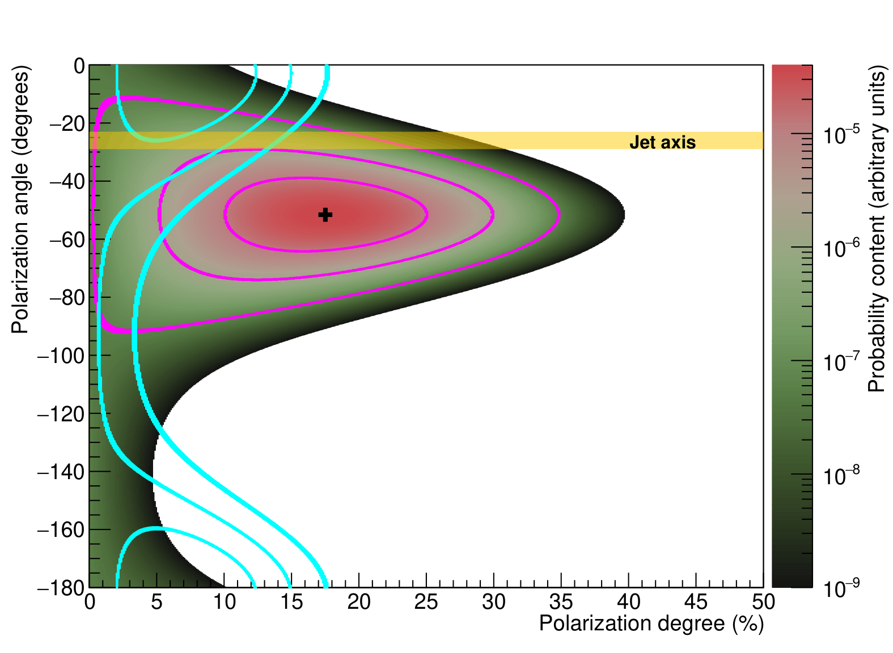
图注：第三段与其余观测合并的偏振度、偏振角比较。阴影是第三段贝叶斯后验密度，黑点为后验众数（17.5%、−51.6°）；洋红和青色轮廓为对应的 68.27%、95.45%、99.73% 概率区域，黄色覆盖示意喷流方向。
怎么看这张图：黑点是二维众数，16.8% 是边缘估计，两者口径不同。比较轮廓重叠和角度相对喷流，不能只比单个最佳值。 直接支持本篇核心结果和方法边界
来源与置信度：arXiv HTML；source verified；https://arxiv.org/html/2611.07032v1/BayesianOverlay_WithJet_PDF2PNG_260724.png
2. FALCON (FERMI-ALMA Calibrator ObservatioN): Cross-matching ALMA Calibrators with Fermi-LAT Blazars
- 来源：arXiv / astro-ph.HE
- 链接：https://arxiv.org/abs/2611.07737
- 作者：Kanako Narita, Yoshiyuki Inoue, Bunyo Hatsukade, Yasushi Fukazawa
- 公告 / 来源日期：2026-11-06
- 阅读层级：相关简报
- 评分：novelty 7/10，importance 8/10，relevance 9/10，final 9.05/10
- 推荐理由：949个毫米与LAT对应体的样本提供显著新统计，红移控制和波段谱指数差可借鉴；不能消除共同增亮及校准源选样。
中文题目：ALMA 校准源里的 949 个 Fermi 对应体：毫米波与伽马亮度的联合统计
问题、方法与结论：FALCON 将 ALMA 校准源表与 Fermi-LAT 4LAC-DR3 匹配并去重，在三个毫米波段得到 949 个独立对应体，约占 4LAC-DR3 相关 AGN 的四分之一。这个总数不要求已知红移；计算内禀光度相关时才使用可靠红移的子样本。Fermi 检出源的 Band 3–6 中位谱指数约 −0.60，未检出组约 −0.80，前者更平；控制红移后毫米与伽马光度仍相关，相关强度在高同步峰 BL Lac 和 FSRQ 间不同。
意义与贡献：这是毫米校准源档案对喷流总体研究的实质增量。共同距离会把不相关流量变成光度相关，偏秩检验去掉了一部分这个效应；仍有相关说明毫米辐射可以成为高能喷流强度的有用统计指标，适合建设观测样本。
可借鉴之处：可借鉴将总匹配目录、可靠红移子样本及按同步峰分类的分析明确分开，并同时展示未控制和控制红移的相关系数。对 TeV 随访，毫米谱斜率是样本优先级参考，可在统一阈值和覆盖下检验是否真改善检出率。
局限与关注点：校准源本身亮度、天区和观测频次选择不均，红移缺失也可能依赖分类；非同时或时间平均的光度不能证明瞬时辐射同区。共同多普勒增亮与喷流功率都能维持相关，偏秩结果不足以唯一决定逆康普顿种子光子。
图11
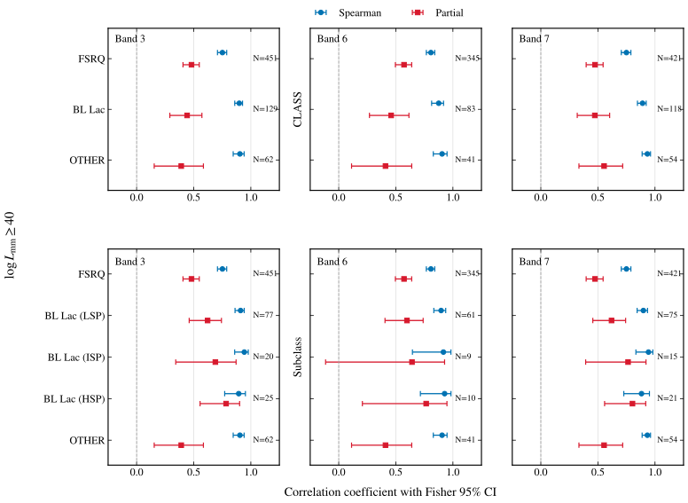
图注：毫米光度对数至少为 40（光度单位 erg/s）的样本中，ALMA 3、6、7 波段的毫米—伽马光度相关。蓝圈为 Spearman 秩相关，红方为控制红移后的偏秩相关；横线是近似 95% 区间，各类样本量标于右侧。
怎么看这张图：对照同一类的蓝红差异，再看各类的误差和样本量；不同频段子样本不完全相同。 直接支持本篇核心结果和方法边界
来源与置信度：arXiv HTML；source verified；https://arxiv.org/html/2611.07737v1/correlation_fisher_95ci_alpha060.svg
3. The retirement party of GRS 1915+105: the radio fading to quiescence of the archetypal microquasar
- 来源：arXiv / astro-ph.HE
- 链接：https://arxiv.org/abs/2611.07039
- 作者：S. E. Motta, R. P. Fender, A. Marino, P. Atri, F. Carotenuto, D. Williams-Baldwin, M. C. Baglio, Jun-Ping Chen
- 公告 / 来源日期：2026-11-06
- 阅读层级：相关简报
- 评分：novelty 7/10，importance 8/10，relevance 8/10，final 8.70/10
- 推荐理由：MeerKAT深积分测到微类星体历史低点，射电衰减区分中心活动变弱与单纯遮蔽，最终静息仍待监测。
中文题目：GRS 1915+105 降到历史最暗射电态：中心引擎衰减的独立证据
问题、方法与结论：作者合并 MeerKAT 1.28 GHz 与 AMI-LA 15.5 GHz 长期监测，并加上 2026 年 7 月深度双波段 MeerKAT 和前后三次 Einstein Probe/FXT 指向。2025 年最后一次 Jy 级活动后，监测通量持续降低，2026 年 5 月 9 日后十分钟常规监测不再正式检出。7 月深积分在 L、S 波段分别约 150、90 微 Jy，1.28–2.62 GHz 谱指数 −0.67±0.41，达到该源最低已测水平。
意义与贡献：2019 年后强遮蔽使 X 射线难追踪中心功率，射电在这次下降中提供独立证据：仅继续加厚遮蔽不足以解释现有跨波段记录。与长周期静息黑洞双星的射电亮度接近，支持长爆发可能结束；不能证明今后不再亮起。
可借鉴之处：方法上将常规曝光的不检出、深度指向的弱检出和 X 射线的背景底限分开。图中红点是低于阈值的观测，不代表真实通量为零。若后续地面甚高能通量在核暗后持续，可检验长期积累或远区产生的情形，而非直接把源区锁定到即时内盘。
局限与关注点：谱指数误差允许厚薄成分混合，也未排除本征偏陡的核喷流；暂时关闭与长期静息需继续看。约万年的静息时标是条件性的盘不稳定模型预测，非观测；受遮蔽的 FXT 光度也不能当无吸收的内禀吸积功率。
图1
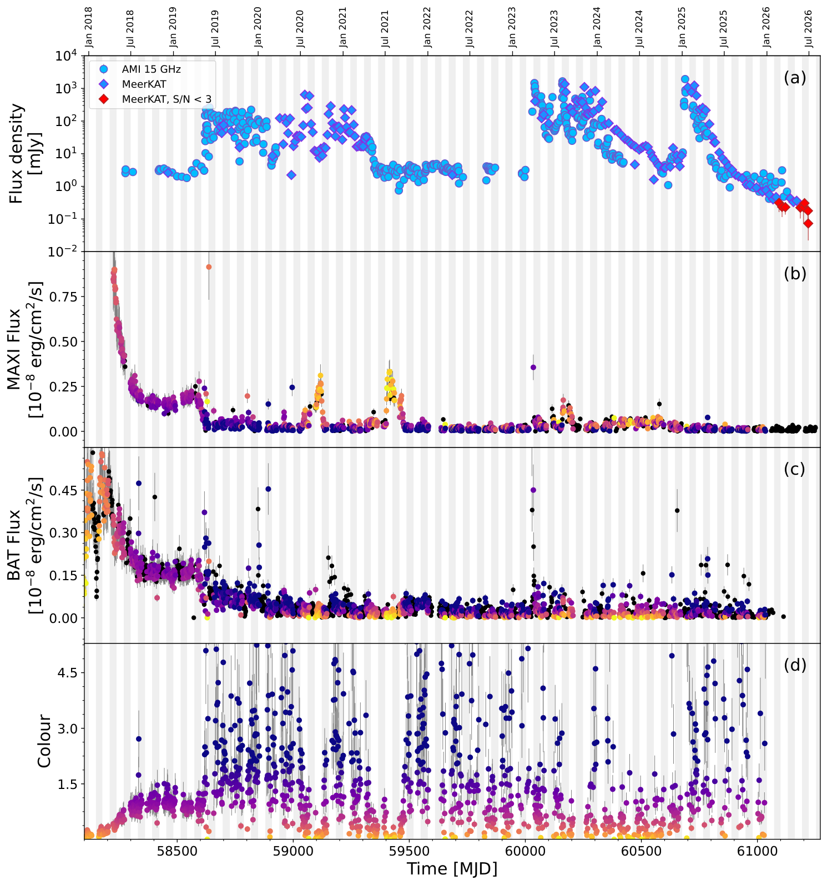
图注：2018 年 1 月至 2026 年 7 月射电和 X 射线光变。上为 AMI-LA 15.5 GHz 与 MeerKAT 1.28 GHz，红菱形为低于 3σ 阈值；中两幅为 MAXI 2–12 keV 和 BAT 15–50 keV；下为 BAT/MAXI 颜色。灰白带划分月份，早期极亮 X 射线点超出当前纵轴。
怎么看这张图：最后一轮射电耀发之后的下降与早期遮蔽转折分开看；深曝光极弱检出不能用监测不检出代替。 直接支持本篇核心结果和方法边界
来源与置信度：arXiv HTML；source verified；https://arxiv.org/html/2611.07039v1/GRS1915_zoom_MAXI_BAT_ZOOM_contiguous_months.png
4. Discovery of the redback pulsar PSR J2053+6905 and multi-epoch optical observations of the system
- 来源：arXiv / astro-ph.HE
- 链接：https://arxiv.org/abs/2611.07668
- 作者：A. V. Karpova, J. D. Taylor, A. V. Bobakov, A. Kirichenko, D. A. Zyuzin, E. Fonseca, S. V. Zharikov, D. K. Romanov
- 公告 / 来源日期：2026-11-06
- 阅读层级：相关简报
- 评分：novelty 7/10，importance 7/10，relevance 9/10，final 8.70/10
- 推荐理由：发现LAT候选红背1.68毫秒射电脉冲并用径向速度约束质量比；高质量解及GeV关联证据需区分。
中文题目：从 Fermi 候选体到 1.68 毫秒红背：J2053+6905 的射电脉冲与质量比
问题、方法与结论：团队用绿岸望远镜定向搜索原有红背候选体，发现 1.68 毫秒射电脉冲，轨道周期与光学调制吻合。得到射电计时的轨道参数和质量函数，再用 GTC 时序光谱的伴星径向速度半振幅 337±4 km/s，联合得到质量比约 7.05±0.08。多期光变强烈不对称；在相位约 0.25–0.75 的较稳定部分采用对称直接加热模型，得到约 2.1 与 0.3 个太阳质量的模型解。
意义与贡献：无线电脉冲把此前仅凭多波段位置及光变的候选体落实为毫秒脉冲星双星，且给出动力学质量比。所处视线有 4FGL 伽马源，使其成为后续找高能脉冲的优先目标；位置重合和射电确认并非已经测得伽马脉冲。
可借鉴之处：先用计时定轨道，再利用光学径向速度，而不是让不稳定光变独立决定全部参数。对有加热与斑点的伴星，分历元和相位检查一致性后再挑稳定区段拟合；时序光谱的光心与质心差也值得用更完整模型校正。
局限与关注点：质量比的形式误差来自特定测量模型；单体质量需倾角和受照面几何，因此不能把约 2.1 个太阳质量当无模型高精度测量。冷斑迁移只是可能解释，数据按年分段不能确定短时变化；更完备光变与射电/伽马定时仍待完成。
图8
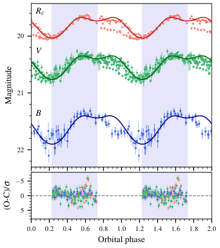
图注：上排为伴星 B、V、R 光变按轨道相位折叠，实线为最佳拟合，重复两轨道以便观察；阴影标出用于拟合的稳定区段。下排为观测减模型的星等残差除以各点误差。
怎么看这张图：先看阴影范围；区外残差可显示对称加热模型的适用边界，不能视为同等参与质量拟合。 直接支持本篇核心结果和方法边界
来源与置信度：arXiv HTML；source verified；https://arxiv.org/html/2611.07668v1/lc_model.png
5. Constraining tau-sterile neutrino mixing with high-energy astrophysical neutrinos
- 来源：arXiv / astro-ph.HE
- 链接：https://arxiv.org/abs/2611.05170
- 作者：Mauricio Bustamante, Qinrui Liu
- 公告 / 来源日期：2026-11-06
- 阅读层级：相关简报
- 评分：novelty 7/10，importance 7/10，relevance 9/10，final 8.70/10
- 推荐理由：以宇宙基线味混合约束tau-惰性，当前界很弱但和能谱方法互补；区分IceCube观测和未来阵列预测。
中文题目：用宇宙中微子的 τ 味亏损限制惰性混合：IceCube 当前界与未来投影
问题、方法与结论：论文在三活性味加一惰性味框架下，计算原本几乎不产 τ 味的天体源经宇宙传播后在地球的味比例。标准振荡可产生约三分之一 τ 味，惰性混合使该成分降低。在让源端电子味比例与标准混合参数变化的剖面拟合中，IceCube MESE 2025 只在 90% 置信度排除约大于 0.88 的 τ 混合幅平方；组合未来多站的预测可到 2040 年约 0.24–0.29、2050 年约 0.12–0.14。
意义与贡献：价值在于独立的能区、传播基线和系统误差，尤其可覆盖若干地面实验没有给界的质量差范围。今天的数值界很弱，未来结果也只是目标灵敏度；文章没有发现惰性中微子，不能把跨实验比较读作已取代现有最佳界。
可借鉴之处：联合味分析时应保留二维味似然及拓扑区分，不只使用单味误差棒，并对源初始味、标准混合参数和其他惰性混合做剖面。若要评估新阵列价值，应比较加入后的似然几何，不仅按事件数平方根缩放。
局限与关注点：质量差的广泛适用性依赖所用的宇宙传播和振荡平均、源模型，未来限制还取决于探测器配置、暴露与真实味组成。源处高能 τ 味若显著或出现非标准传播，简单亏损解释需要重新建模；不能把预测的区间作为已获数据。
图5
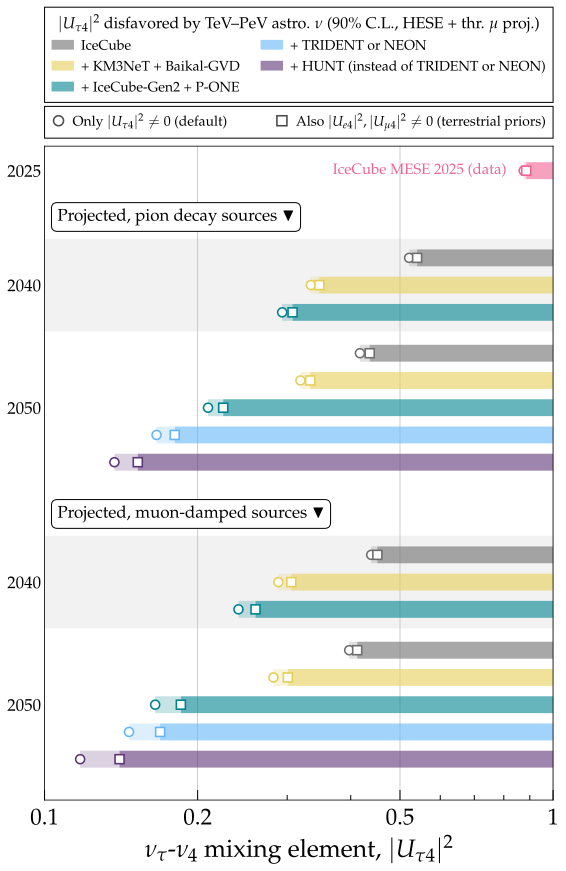
图注：IceCube MESE 2025 与不同未来探测器组合的 90% 置信上界，分别假设介子衰变或 μ 子阻尼源。条带是排除范围，较深部分在另外两味的惰性混合允许变化时仍排除，浅色部分只对应默认分析。
怎么看这张图：最上方的当前界与后续预测严格区分；深浅差反映额外混合自由度，不是两个独立数据集。 直接支持本篇核心结果和方法边界
来源与置信度：arXiv HTML；source verified；https://arxiv.org/html/2611.05170v1/fig4_limit_bars.svg
6. General-relativistic neutrino-radiation hydrodynamics of crust ejection in magnetar giant flares
- 来源：arXiv / astro-ph.HE
- 链接：https://arxiv.org/abs/2611.07022
- 作者：Tetyana Pitik, David Radice, Jacob Fields, Yi Qiu
- 公告 / 来源日期：2026-11-06
- 阅读层级：相关简报
- 评分：novelty 8/10，importance 7/10，relevance 8/10，final 8.65/10
- 推荐理由：用GR两矩中微子输运和核反应网络给出磁星耀发壳层抛射、低重r过程产额的量化上界；球对称无磁场限制精读优先级。
中文题目：磁星巨耀发能抛出多少重元素？相对论输运把产额压低
问题、方法与结论：作者用 AthenaK 的广义相对论流体、核物态方程和两矩中微子输运推进外壳冲击，并沿轨迹跑核网络。对应 10¹⁵–10¹⁶⋅⁵ G 压力的模型，抛出约 10⁻¹⁰ 到 5×10⁻⁸ 个太阳质量；最高压时中微子损失显著，带输运的抛射质量约减半。高速高熵物质膨胀过快，主要冻结为 α 粒子和自由中子，A≥90 的重核在最强模型也至多约 3.5×10⁻¹¹ 个太阳质量。
意义与贡献：巨耀发能剥离外层壳并不等于它是重要重 r 过程工厂。新计算同时跟踪冲击、电子分数和成核时标，说明为何抛出的量与核成分都可能低于较早的深层抛射估计。短时光紫外瞬变若产生，主要热源可来自自由中子衰变。
可借鉴之处：对同类模拟，可先比较加入或移除弱相互作用的成对算例，再追踪温熵和电子分数沿粒子轨迹的变化。总抛射量、重核质量分数和绝对产额应分别列示，避免以很少重核的高相对比误判总体重元素预算。
局限与关注点：压力按等效磁场设定，动力学并未加入真实磁场；球对称且全表面受冲击的假设偏向较大抛射。真实局部耀发和切向磁场可能进一步减小抛射，故数值是指定压力下的有条件上界，不能从中直接预测某个事件的光学亮度或检出率。
图8
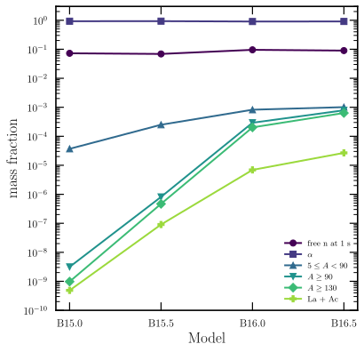
图注：四个耀发模型的核合成质量分数比较：自由中子取约 1 秒时刻，其余列给出约十亿秒后 α 粒子、5≤A<90、A≥90、A≥130 及镧系加锕系产物。
怎么看这张图：A≥130 是 A≥90 的子集，不能把所有柱相加。中子取较早时刻是为了看可用于衰变加热的库存。 直接支持本篇核心结果和方法边界
来源与置信度：arXiv HTML；source verified；https://arxiv.org/html/2611.07022v1/fig_mass_fractions.svg
7. High precision timing of seven binary millisecond pulsars with the European Pulsar Timing Array
- 来源：arXiv / astro-ph.HE
- 链接：https://arxiv.org/abs/2611.07363
- 作者：K. Liu, A. Chalumeau, H. Hu, S. Chen, L. Guillemot, J. Jang, M. Keith, J. Antoniadis
- 公告 / 来源日期：2026-11-06
- 阅读层级：相关简报
- 评分：novelty 7/10，importance 8/10，relevance 7/10，final 8.35/10
- 推荐理由：EPTA七双星新计时及周年轨道视差对节点角提供实际数据约束；微赫兹引力波上限要保留样本与噪声假设。
中文题目：用七颗双星毫秒脉冲星测量轨道朝向：EPTA 计时补上节点角
问题、方法与结论：作者联合 EPTA 望远镜与相干合成 LEAP 的到时数据，对七颗双星毫秒脉冲星做相位相干的贝叶斯计时及噪声分析。三个系统有 Shapiro 延迟可约束质量，并用视差与自行估计距离和横速；J0125−2327 和 J1741+1351 检出周年轨道视差。地球一年运动改变视线，从投影半长轴的周期微变补足单靠 Shapiro 延迟和长期自行无法分清的节点角简并。
意义与贡献：新的贡献不是简单增加计时点，而是把不同几何效应连在一起：一个主要约束倾角正弦，另一个提供轨道朝向。J0125−2327 因而支持一组明显优选的方向解，J1741+1351 的节点角也得到较紧限制；轨道还可作为不同频段引力波约束的工具。
可借鉴之处：联合拟合要把红噪声、介质色散、各望远镜偏置与轨道参数的协方差保留；不同望远镜不是可直接相加的独立质量估计。可先对照扣红噪声前后的残差，再比较倾角和节点角的联合后验及替代解，而不只报中位数。
局限与关注点：用于超低频和微赫兹引力波的是特定轨道周期导数或参数的上限，受本征演化、银系加速度、运动学和轨道历元误差限制，不能与 EPTA 常规随机背景检测混为一谈。个别系统的大上限主要由轨道参考历元不精确所致。
图4
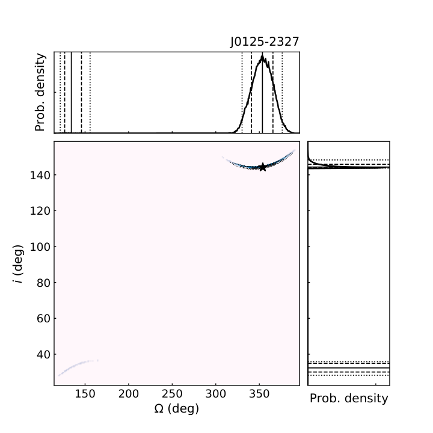
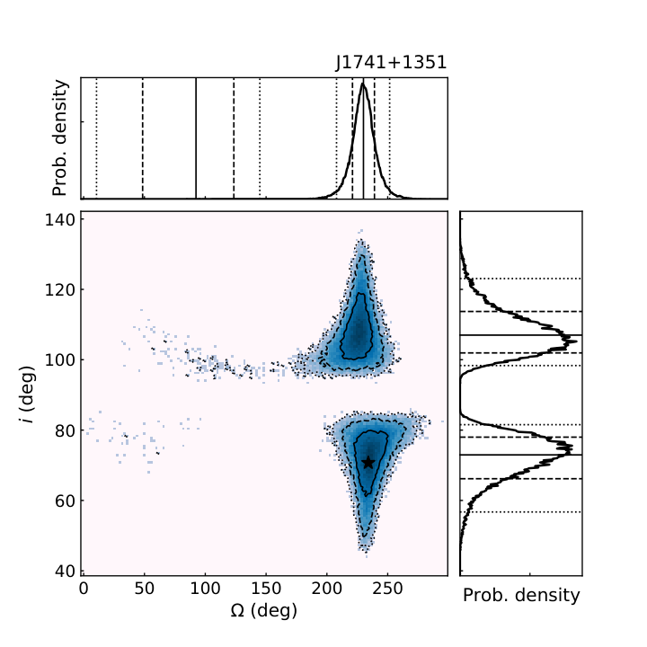
图注：J0125−2327 与 J1741+1351 的轨道升交点经度和倾角的联合贝叶斯后验。旁侧边缘分布的实线、虚线和点线分别给出中位数、约一倍和两倍置信范围。
怎么看这张图：优先看联合后验的多个区域是否仍有权重；投影到单参数会隐藏倾角与节点角的联动。 直接支持本篇核心结果和方法边界
来源与置信度：arXiv HTML；source verified；https://arxiv.org/html/2611.07363v1/KK-J0125-2327.png；https://arxiv.org/html/2611.07363v1/KK-J1741+1351.png
说明
评分由 LLM 给出初评，再由本地阈值策略过滤；IACT、TeV 伽马射线和高能中微子天文学按重点方向处理。